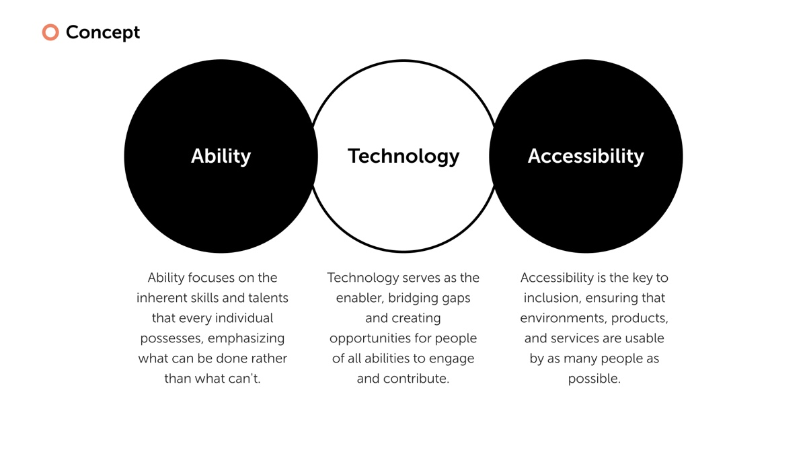
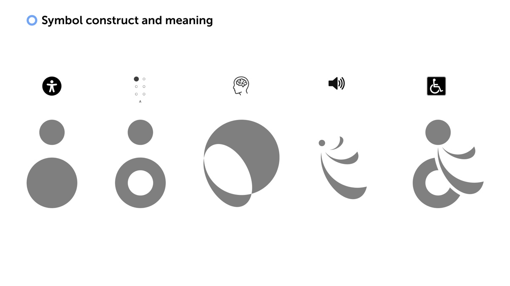
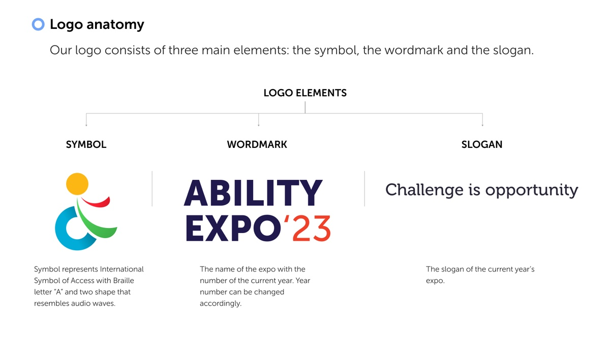
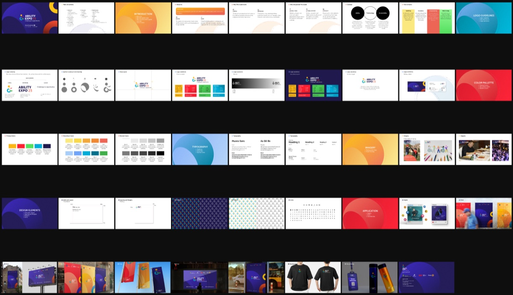
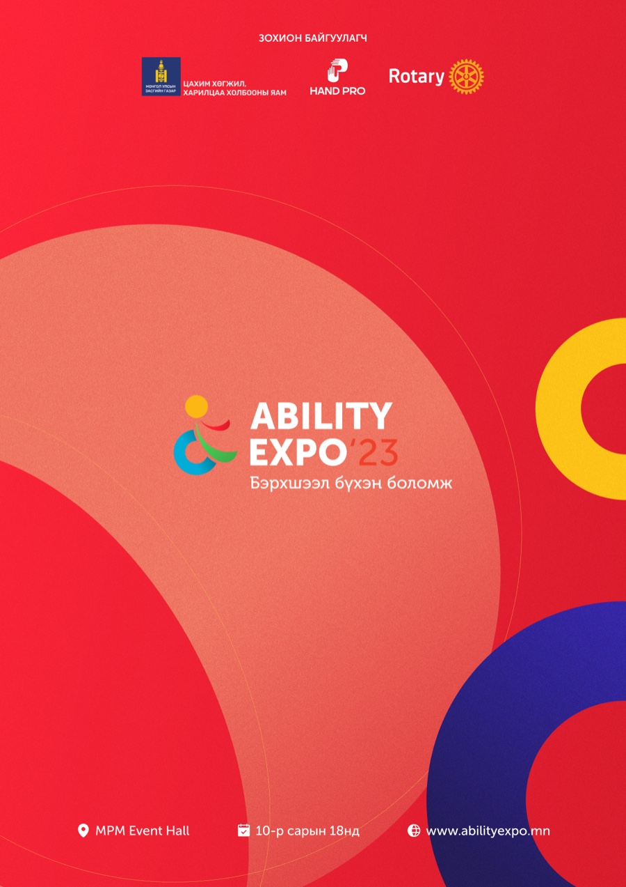
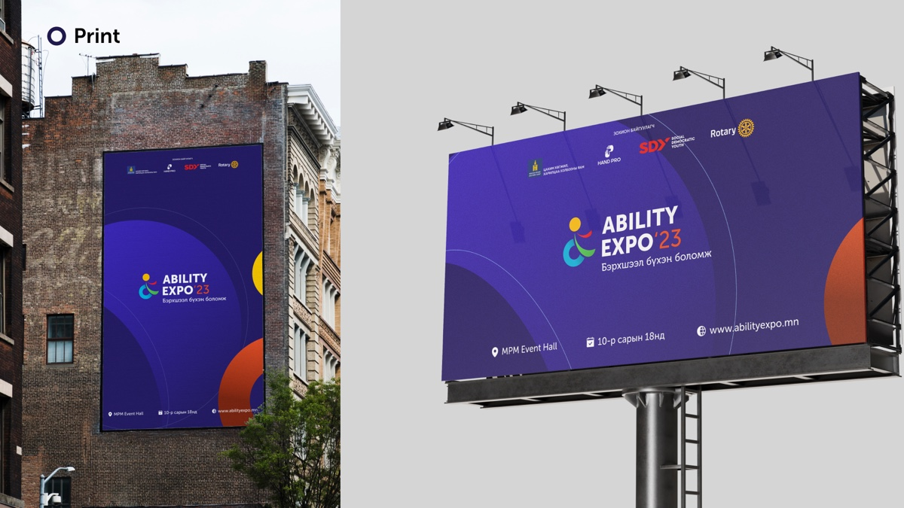
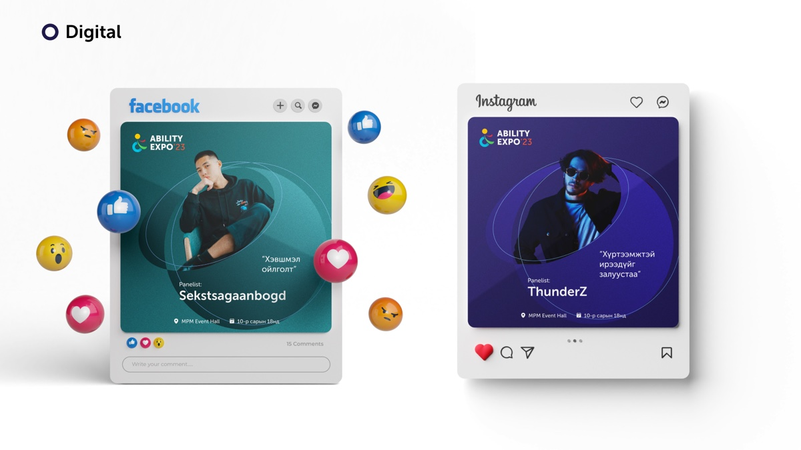
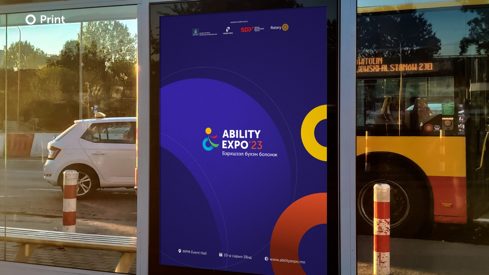

Ability Expo, designing for accessibility
2023
Ability Expo is Mongolia’s expo for disability inclusion. In 2023 I built its identity and wrote its brand guidelines in two languages. The mark had to carry five kinds of disability in one shape, and the whole system had to pass the test it was preaching: be readable by the people it was about.1
Challenge is opportunity
I started from the organisers’ own framing and tightened it into three words: ability, technology, accessibility. Ability for what a person can do rather than what they cannot. Accessibility for environments, products and services that as many people as possible can use. Technology as the thing that bridges the two.

Then I wrote the tone of voice as four adjectives the client could hold me to: uplifting, inclusive, empowering, welcoming. The slogan for the year became Challenge is opportunity, in English and in Mongolian, Бэрхшээл бүхэн боломж.
The expo is not small. The sponsorship deck I built alongside the identity carried the previous edition’s numbers: 2,600 people through the door, 150,000 watching online, 187 open positions posted by employers, 300 people looking for work.2 The identity had to work for a job fair and a public celebration at once.
Five disabilities, one mark
The hard part was the symbol. Disability is not one thing, and I did not want a mark that only read as a wheelchair. So I built it in five moves and kept the construction as a slide in the guide, because I wanted every partner reproducing the logo to know what each piece meant.

- A head over a body
- the International Symbol of Access, the figure everyone already reads as disability
- A ring where the body was
- the Braille cell for A, one raised dot and five empty, for sight
- Two circles overlapping
- a mind, for cognitive and learning disability
- Three arcs off the head
- sound waves, for hearing
- All of it together
- one figure in four colours, moving forward
I kept the International Symbol of Access as the base because it is the one shape the whole world already reads correctly. Then I carved the body into the Braille cell for A, so sight is in the mark. The overlapping circles are a mind. The three arcs off the head are sound. The composite reads as a figure leaning forward, which is the posture I wanted: motion, not waiting.

I split the lockup into three parts on purpose. The symbol is permanent. The wordmark carries the year, so it changes once. The slogan is the year’s theme, so it changes with the programme. I drew the whole set: portrait and landscape, with and without slogan, primary, secondary, and neutral in black and white, nineteen files in total, so nobody would ever have to improvise one.
Four colours, four parts
I gave the symbol four colours and let those four become the brand.
I named them for what they are rather than for a mood, and I specified every one as a Pantone next to its hex, because an expo is mostly printed things: posters, banners, badges, a stage. Then I set them at full saturation against a deep navy or against white, and nowhere else, so every pairing on any surface clears the contrast a low-vision reader needs. That was not decoration. It was the brief applied to itself.
Under the primaries I built two tints and two shades of each, plus a ten-step grey from
#FFFFFF to #000000, so a partner could make a quiet version of anything
without inventing a colour.
A guide that passes its own test

I wrote the guide as a deck rather than a PDF because the people using it would be event staff, sponsors and volunteers looking at it on a laptop at a venue, not a design team at a desk. I set the type in Museo Sans and built the grid so body text never drops below 24 pixels on a slide. A guideline document about accessibility that itself uses 11-point body copy is making a claim it does not keep.
The guide covers who should use it and why, the concept, tone of voice, logo anatomy, dos and don’ts, clear space, every variation, three colour families with CMYK, RGB, hex and Pantone, a type scale from 80 down to 24, photography and framing, grids, spacing at 24, 50, 100 and 112, patterns, an icon set, and applications across digital, print and merchandise. Then I did it again in Mongolian, because the organisers, the sponsors and the volunteers do not all read the same language and a guide only half of them can use is half a guide.
On walls, feeds and shirts

The graphic language is large overlapping circles, each in one of the four colours, cropped by the edge of the page. I chose circles because the symbol is built from them, so every poster is the logo at a scale where you stand inside it. I ran the same composition across A4, A3, roll-up banners, a stage backdrop, a billboard and a bus side, and changed only the ground colour so a venue could be dressed in three colours without any piece repeating.


For social I built templates rather than posts: a panelist card with a portrait in the circle, a quote, the name and the logistics line, in a teal version and a navy one. The organisers ran a long calendar off those templates, including a countdown series and coverage on the day.3

What designing for access taught me
Every brand claims values. This one had to demonstrate them in the artefact, because the audience would notice immediately if it did not. So I held myself to three checks on every piece: can a low-vision reader see it at the size it will be printed, does the mark still say what it means at 24 pixels on a phone, and does a person with the disability in question recognise themselves in it.
A brand about access that a blind person’s friend cannot describe to them in one sentence has failed. Mine is a figure moving forward, made of a wheelchair, a Braille A, a mind and a sound.
I kept the palette to four saturated colours on navy or white, set body text large by default, built the symbol from shapes with meanings rather than shapes that looked nice, and wrote the guide twice so nobody was locked out of using it. None of that was extra work on top of the brand. It was the brand.
- Event details are from the materials I designed: MPM Event Hall, Ulaanbaatar, 18 October 2023, organised by Hand Pro with Rotary and the Ministry of Digital Development and Communications.
- Figures are the organisers’ own, from the sponsorship deck, and describe the edition before this one.
- The social calendar lives in a separate file with several hundred posts on one canvas. The pieces shown here are the templates from the guidelines; the calendar itself was run by the organisers on those templates.